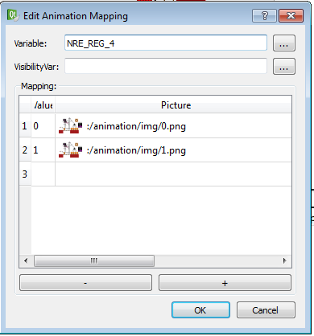

Questo oggetto permette la visualizzazione di una serie di frame in formato png associato al valore assunto da una variabile intera della Crosstable.
Per utilizzarlo seguire i seguenti passi:
Trascinare l’oggetto sulla pagina.
Fare doppio click sull’oggetto e compilare la tabella di mappatura ricordando che nella colonna “Value” si dovrà inserire il valore che verrà letto da PLC e nella colonna “Picture” si dovrà inserire l’immagine che verrà visualizzato sull’interfaccia.

Definire il campo variable con il nome della variabile della Crosstable da cui si vuole leggere/scrivere. Premere il bottone “…” per selezionare la variabile desiderata.
Definire la variabile visibilityVar con il nome della variabile della Crosstable da cui si vuole leggere il valore da usare per visualizzare o meno l’oggetto. Premere il bottone “…” per selezionare la variabile desiderata.